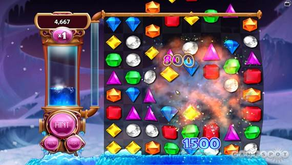
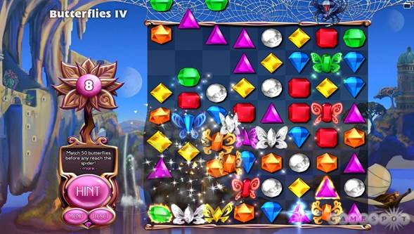

If you're a Bejeweled beginner, here's how it works. Different-colored jewels fill an eight-by-eight board. To wipe them away, you create groups of at least three gems by swapping one gem with one located directly beside, above, or below it. This causes those gems to disappear and the ones above to drop down, allowing for new jewels to appear at the top. Matching four or more gems together creates a special gem that will explode and remove surrounding jewels when it is matched; the more jewels matched, the more powerful the explosion. Matching like-colored gems in a T- or L-shaped pattern creates a star gem that will zap away all gems of a particular color. The most traditional way of experiencing Bejeweled is in Classic mode, which returns in this sequel. Here, you keep making matches until you run out of moves. The mode is as addictive as ever, encouraging you to plan out your moves so you can create falling cascades of gems, build up a high score, and avoid that heart-sinking "no more moves" message that brings your run of combos screeching to a halt.
As good as Classic mode is, Bejeweled 3 is at its best when it provides a sense of urgency. If you need a time-ticking challenge, Lightning mode is your basic test of skill. As the clock approaches zero, special time gems tumble onto the board, and clearing them lets you add precious seconds to the clock. This is more or less like the Blitz mode in previous games, but it's a good way to get your finger tapping and your eyes roaming the board for the best combinations. The best of the new modes take that kind of heart-pumping challenge and twist it up in a number of ways. One of the best ways is in Ice Storm, in which columns of ice rise from the bottom of the board and must be smashed by making matches. Because vertical and horizontal matches have different effects on the ice, you have to make split-second decisions when faced with multiple possible matches. This gets incredibly fun and intense and is probably the best mode to choose if you have a few minutes to spare and want a quick rush. Diamond Mine provides a similar kind of stimulation. In this mode, you must explode jewels at the bottom of the screen to dig into the terrain, where artifacts and gold deposits await. The time limit keeps the thrill level high, and it's a lot of fun to watch your well-planned explosions dig up chunks of earth.

Ice is back with a brand new invention.
Other modes provide different kinds of excitement. Butterflies mode is a great addition in which gems with butterfly wings rise a row after every match you make. The spider at the top of the screen is all too eager to eat these beauties, so you need to clear them before they reach the top. Once many butterflies are on the screen at once, you must plan your moves carefully, and matching butterflies causes them to flit away in a satisfying flurry of wings. Quest mode morphs the different modes into specific challenges in which, for example, you must clear a certain number of butterflies or dig up a certain amount of gold before you can continue to the next leg of your journey. This mode gives the standard Bejeweled gameplay a nice sense of progression that keeps you pushing forward to unlock the next round of puzzles. Then, there's Poker mode, which eschews the importance of flame gems and combos; it instead asks you to create poker hands by matching gems of specific colors. It's an interesting variation, and the Vegas-style sound and visual effects that jazz up your flushes are a nice reward for your well-considered moves. The meaningless nature of combos in this mode, however, makes it less joyous than the others.
Zen mode is another one of the new offerings and is Bejeweled 3's attempt to fulfill fans of the burgeoning ambient game genre exemplified by such releases as Flow, Flower, and The UnderGarden. It wants to relax you, but the bizarre result isn't relaxing as much as cheesy--though the cheesiness provides its own kind of entertainment. This is an endless mode in which you can turn on relaxation-tape noises, such as seagulls and waves, and perhaps you will be able to calm your nerves in this manner. The other options in this mode are less likely to relax you than make you giggle, however. You can turn on mantra messages with themes like "weight loss" and "positive thinking," but these pronouncements ("My body is perfect right now") are more quaint and kooky than inspirational. You can also activate other features, such as a breathing indicator, but they seem out of place. Good ambient games are successful because every element is built around a singular idea. Bejeweled 3 layers its eccentric concepts onto a game that wasn't created to support them, and it's a combination that doesn't gel. Nevertheless, an endless mode is always welcome, and even if the pleasure you get is more zany than Zen, it's pleasure all the same.

You give me butterflies inside.
It speaks to Bejeweled's classic core gameplay that it still inspires the same one-more-round compulsion of its predecessors. The bright jewels, the glassy plink-plink noise of successful matches, and the deep bass of the announcer who cries out "excellent" with the gravitas of a sorcerer splitting the earth make it easy to stay under the game's spell. Yet this spell has been cast before, and in spite of its new modes and clear appeal, Bejeweled 3 is about as safe a route as developer PopCap Games could have taken. The match-three-or-more gameplay hasn't evolved, so it's hard to shake the sense that you've played this game before. At a price of $19.99, you might reasonably have expected more from a Bejeweled sequel--at the very least, online leaderboards or Steam achievements that allow you to show off your gem-matching skills. Alas, Bejeweled 3 features neither, which makes them disappointing omissions in a score-focused puzzle sequel from a major developer.
But it's the safe approach that will make legions of Bejeweled fans happy as they swap jewels and race the clock to better their previous scores. Bejeweled 3 is the kind of game that attracts almost anyone, whether you are a longtime video game player or the grandparent of one. And the best of the new modes are so fun that there are still reasons to splurge for this sequel and ignore the high price point--even if you've explored the depths of every Bejeweled game and clone in existence. Whether you have a few minutes to kill or want to lose yourself for an hour or two, there's something here to satisfy, though you'll surely be struck by a strong sense of deja vu.